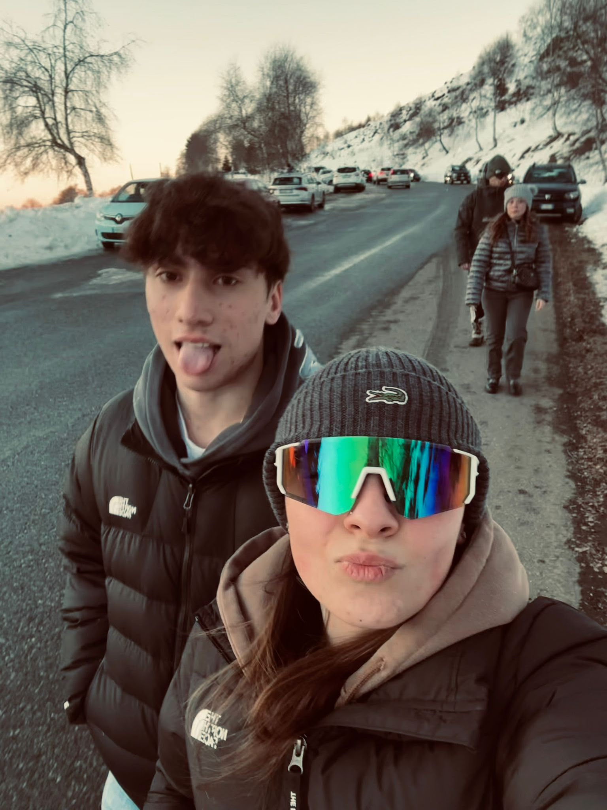
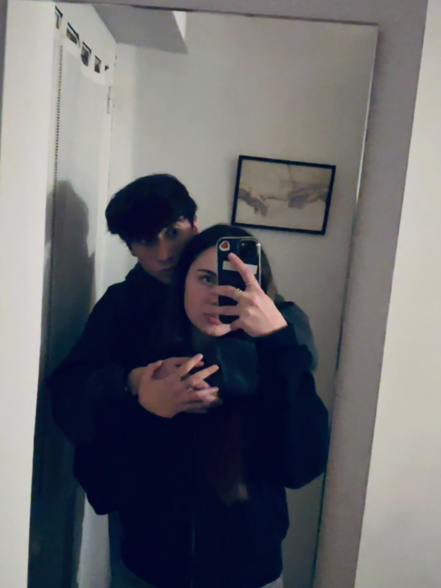
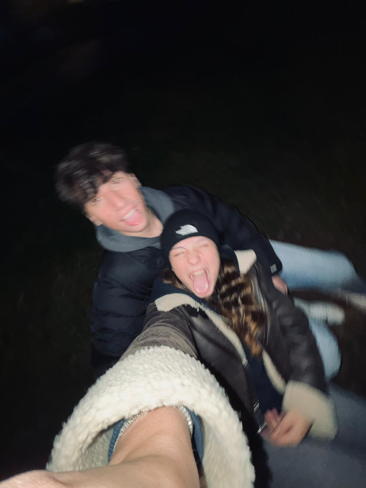

✦DICONO CHE STANOTTE...
Bisogna guardare il cielo e aspettare una stella cadente.
E che quando ne vedi una, puoi esprimere un desiderio.
Io uno ce l'avrei.
Ma non te lo dico eheheh.
Porta sfortuna dirlo, no?
Porta sfortuna dirlo, no?
Prometto che non è una cosa troppo sdolcinata.
Forse.
E che quando ne vedi una, puoi esprimere un desiderio.
Io uno ce l'avrei.



E forse è proprio questo il bello.
Non voglio prometterti cose enormi, né fare discorsi da film.
Mi basta sapere che ci stiamo dando un'altra possibilità.
Una canzone che stasera ci sta fin troppo bene.
Ascoltala con me ↗Il pulsante apre Spotify: niente autoplay, parte con un tuo tap.
Buona notte di San Lorenzo Alii.